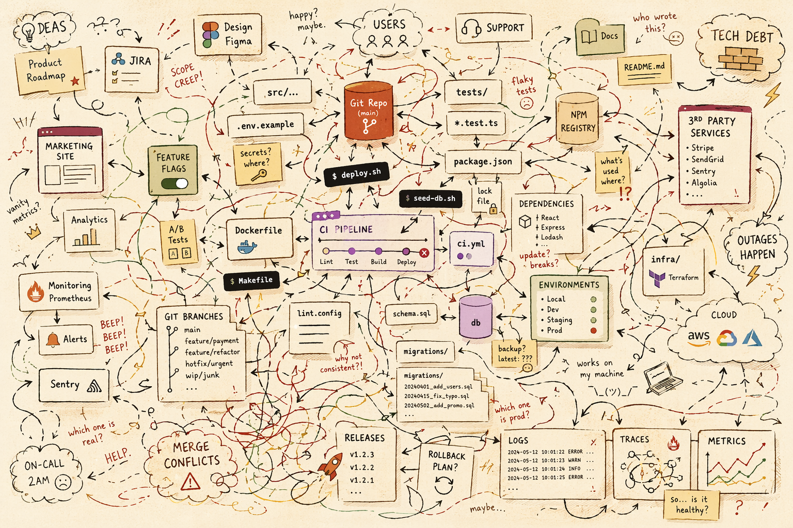

Makes money.
Legacy codebase
Making legacy codebases agent-ready, without asking the model to guess its way to production.
The early shape: the developer asks, the LLM reasons, and the codebase waits for a human or a tool to make it real.
Copilot, Claude, Codex, and similar harnesses introduced tool-using agents. The agents can now run in a loop to inspect, edit, run, and verify.

Add a new column for phone_numner - and it's looping for straight 13 minutes.

The agent explores because the next useful move is not encoded.

The chat says complete, you click the button and it's broken. Classic Did you even try to run it?

Useful discoveries vanish with the session.
Ask Copilot, Claude, or Codex to launch it locally - no extra instructions.
Will it succeed from existing repo alone?
If yes, how long until the app is actually running?
How about asking a developer building a feature without being able to run the code?
Adding deterministic capabilities to the Inference layer by encoding the path from intent to proof.
Harness's eyes and ears, providing deterministic and objective evidence.
Strict, conditional rule/policy that defines when a check must happen.
The friction - blocking progress until the condition is met.
The task: add a new phone_number column to an existing PostgreSQL database and expose it through a FastAPI backend.
The mistake: the agent writes a non-null migration without a default for existing rows.
A lifecycle rule intercepts the agent before the risky change can move forward.
alembic check and a migration dry-run test existing rows against the new schema.
The failed proof blocks progress and returns the exact migration error to the agent's context window.
The gate does not decide whether the migration is safe. It decides when the proof must run.
The sensor gathers objective evidence from the repo: migration health first, backend compilation second.
{
"hooks": {
"PreToolUse": [{
"if": "Bash(git commit*)",
"run": "./scripts/harness-proof-gate.sh"
}]
}
}
python -m alembic check if [ $? -ne 0 ]; then echo "INVARIANT_VIOLATION: DATABASE_MIGRATION_FAILED" echo "Detail: missing nullable/default definition." exit 2 fi pytest tests/test_backend.py
Execution brake: the pending commit is killed before the unsafe migration moves forward.
Token funnel: the sensor output is injected into the agent's next context window.
[System Message from PreToolUse Gate] Tool 'git commit' aborted due to script failure (exit code 2). Error Category: INVARIANT_VIOLATION: DATABASE_MIGRATION_FAILED Detail: Your migration file is missing a nullable/default definition. Fix the code syntax to clear the gate before retrying.
After each run, capture what would have made setup, execution, or verification faster and more reliable.
Where did the agent stall or guess?
Turn the lesson into memory, docs, checks, or scripts.
The next session starts with the lesson available.
Repair with proof: add a nullable/default definition, rerun the gate, then continue only after evidence passes.
A good harness absorbs that spread and gives the agent a small, boring interface to the system.

Give the agent safe access, clear interfaces, and a short path from intent to evidence.
Full CLI access inside an isolated environment, such as a dev container.
Skills, MCP tools, or CLI commands for every architectural component.
Project verbs such as verify-api, verify-ui, and proof.
Read-only access to logs, traces, metrics, and deployment history.
Turn repeated failures and successful workflows into harness improvements.
A harness turns a clever model into a dependable engineering teammate by making the path from intent to evidence explicit.